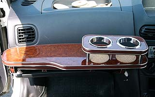
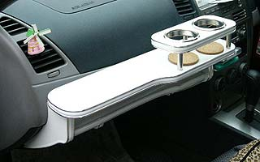

【乱人流/RandoRyu LUX】ダッシュテーブル Y11ウイングロードの受注について
Ｙ１１ウイングロードは前期か後期かで種類が異なると設定表ではありますが、
年式やグレードでの確認だけでは判断できなクルマが２件発覚しました。
対応として下記画像とご自身のお車と見比べて判断して頂けます様、宜しくお願いします。

●Aタイプ ウイングロード/ADバン（Y11）
◆
ウイングロードの一部に
◆
このタイプが存在します。

●Bタイプ ウイングロード（Y11）
◆
後期型に多いタイプ。